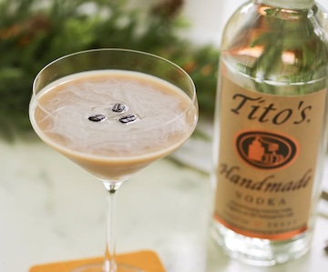

Espresso Martini
Main Page

Description
Need a pick-me-up? Turn your latte into a libation with the help of Tito's. Combine a splash of coffee liqueur, Irish cream, freshly brewed espresso, and you've got a martini with some extra buzz. Perfect for after-dinner drinks (use decaf espresso if bedtime is in your future) or a late-night boost to keep the party perky.
Ingredients
- 1 ounce Tito's Handmade Vodka
- 1 ounce Irish cream
- ¾ ounce coffee liqueur
- ½ ounce fresh brewed espresso
- 1 splash Dash heavy cream
- 1 cup Ice cubes
- ⅛ teaspoon Ground espresso, garnish
Steps
-
Add all ingredients to a shaker with ice. Shake and strain into a martini glass.
-
Garnish with a sprinkle of ground espresso.